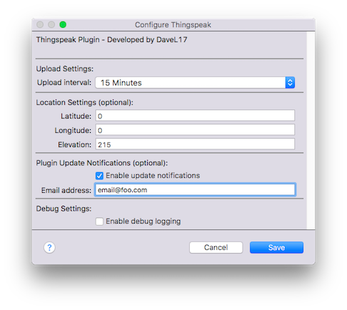

About
The Thingspeak plugin allows users to create Indigo Home Control Server devices which provide a facility to upload Indigo data to Thingspeak for charting and other purposes.
Individual devices contain up to eight data elements for upload.
[ DOWNLOAD ]
Installation

Installation is easy. Download and extract the Indigo Plugin file onto your Indigo server machine. Double-click the plugin file and follow the prompts. Presently, the
plugin contains functionality to upload up to eight Thingspeak devices per channel (a Thingspeak limitation).
The plugin supports one channel per device:
- Within the plugin preferences, adjust the preferences as desired. The plugin will function perfectly fine with the defaults.
- Create a device for the data you want to track. There is no limit to the number of devices you can create, although there may be a limit to the number of Thingspeak
channels allowable per account (see Thingspeak for more details). Each channel has a unique API key which should be added to the device configuration. In addition,
it is possible to host a Thingspeak server on a local network and if this is done, the IP and port number of the server should be entered.
- For each data eleent to be tracked, select an Indigo device or variable to track and then click the "Refresh" button, and then select the value to be tracked. Repeat
for each additional value.